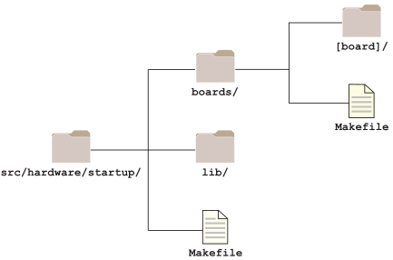

BSPs always include a viable startup program binary, and source code you can use to
build your own image with a modified or new startup program.
Typically, the startup source code is found in the following directory:
bsp_working_dir/src/hardware/startup/boards/boardname
The diagram below shows a typical source code directory structure.
Figure 1. Startup source code directory structure

The diagram shows only the directories you should
always find in the startup
source code directory tree. Note the following about this directory tree:
- hardware/
- The only directory that will always be found under
hardware is startup.
The hardware directory will usually also
include the ipl directory, but on
systems that always use U-Boot, this directory may be absent
because it isn't needed.
Similarly, the flash directory will be
present only if the system will use a Flash
filesystem.
- In most cases, the hardware directory
also includes other subdirectories such as
dev* directories for device drivers
(e.g., audio, eMMC), and spi and
i2c directories with the source
code that supports these technologies.
- boards/
The
boards directory has platform-specific
source code:
- It has a subdirectory for the specific board type (e.g.,
imx6x), which has the board-specific
startup API source code, and subdirectories (e.g.,
mini-can,
sabreARD) with even more source API files
to support specific board variants and specific technologies.
- The buildfile is in one of these directories (e.g.,
src/hardware/boards/imx6x/sabreARD/build).
- lib/
The
lib directory has the generic (i.e., common
to all platforms) startup API source files, and:
- an architecture-specific subdirectory (e.g.,
arm, x86_64) with the
startup API source for the current board architecture.
- a public subdirectory, with header files.